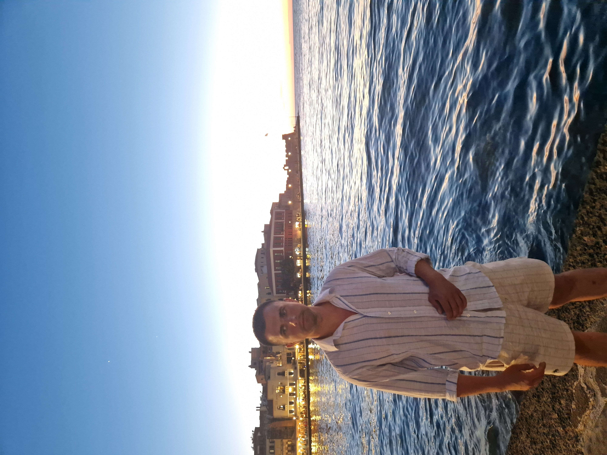
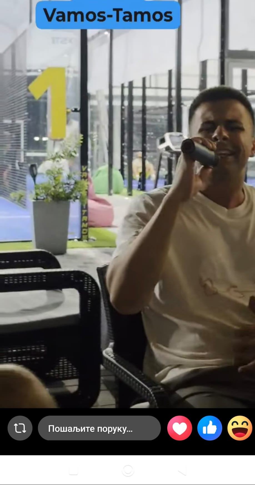

I · anatomija sudbine
lat. deks... lat. sin.

Χρόνια Πολλά · Srećan rođendan
Za čoveka koji ume da sastavi vilicu, društvo i veče. Maksilofacijalni hirurg na specijalizaciji, grčka krv, veliko srce i humor koji stiže bez uputnice.
Jedni su mu dali mirnu ruku, drugi grčki temperament, a neko vrlo duhovit mu je ubacio ceo folder fora u glavu.
Pre mnogo konsultacija i još više smena, rodio se lik koji će jednako ozbiljno shvatiti tuđu muku i potpuno neozbiljno shvatiti svaku priliku da nas nasmeje.
Atina mu je dala mudrost, Asklepije preciznost, majka grčki ritam, a društvo mu je, bez mnogo otpora, dodelilo zvanje: najzanimljiviji čovek u prostoriji.
I zato danas ne slavimo samo rođendan. Slavimo kompletnu pojavu: doktora, druga, humanistu i čoveka zbog kog i obična kafa zna da se pretvori u scenu.
Najređi tip ljudi: dovoljno ozbiljan da mu poveriš lice, dovoljno lud da mu poveriš mikrofon.
Ovo se ne prevodi. Ovo se samo kaže, pogleda u daljinu i nastavi dalje kao da je sve jasno.
lat. deks... lat. sin.
Huan Manuel Baga.
Reebok Classic i polo majice neće da se kupe same.
Jedan kadar kaže “grčka razglednica”, drugi kaže “daj mikrofon, ovo postaje istorija”.
Strogo lice, Egejsko more, košulja spremna za mitologiju. Ovako izgleda kad specijalizacija ode na kratki predah.

Kada krene ova energija, više nema publike. Postoje samo svedoci.
Maksilofacijalna hirurgija nije samo disciplina za precizne ljude. To je posao u kom popravljaš ono što je najvidljivije, a moraš da čuvaš ono što je najnežnije: dostojanstvo čoveka.
Ti to nosiš na svoj način: sa znanjem, smirenošću, forom u džepu i onim retkim osećajem da se ljudi pored tebe stvarno osete viđeno.
Da ti svaka godina donese manje dežurstava koja lome dušu, više ljudi koji te razumeju, pacijente kojima stvarno promeniš život, fore koje ne zastarevaju i dovoljno novih Reebok Classic patika da mirno spavaš.
εις υγείαν · srećan rođendan